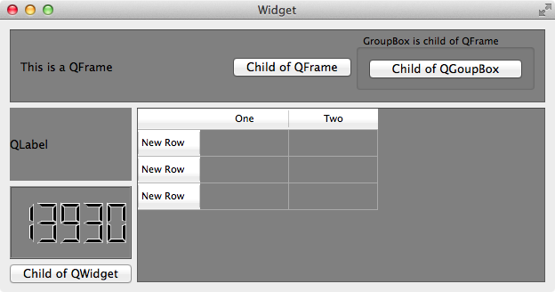
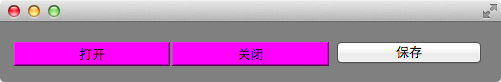
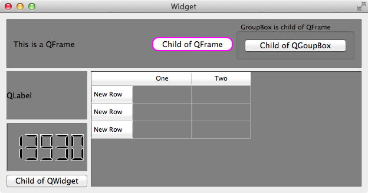
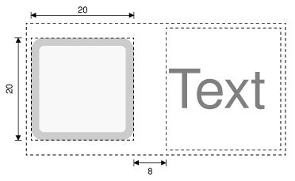

选择器决定了 style sheet 作用于哪些 widget，QSS 支持 CSS2 定义的所有选择器。
QSS 的选择器有
- 通用选择器
* - 类型选择器
- 类选择器
- ID 选择器
- 属性选择器
- 包含选择器
- 子元素选择器
- 伪类选择器
- Subcontrol 选择器
很多时候，可以使用不同的选择器实现相同效果的样式，使用非常灵活。
通用选择器 *
* 作为选择器，作用于所有的 widget。
类型选择器
类名 作为选择器，作用于它自己和它的所有子类。
1 | QFrame { |
使用了类型选择器 QFrame，所以 QFrame 和它的子类 QLable，QLCDNumber，QTableWidget 等的背景会是灰色的，QPushButton 不是 QFrame 的子类，所以不受影响：

类选择器
. + 类名 或者 . + class 的属性值 作为选择器（使用 setProperty(“class”, “QSSClassName”) 设置），只会作用于它自己，它的子类不受影响，注意和类型选择器的区别。
1 |
|
window, openButton, closeButton 和 saveButton 的背景都变成灰色的了，如果只想要 window 的背景是灰色的，按钮的背景不变，可以使用类选择器 .QWidget
1 | /* 把 QWidget 改成 .QWidget */ |
如果 openButton 和 closeButton 的背景是洋红色的，但是 saveButton 不受影响，则可以使用 . ＋ class 的属性值 作为类选择器来设置
1 | app.setStyleSheet(".QWidget { background: gray; }" |

ID 选择器
# + objectName 作为选择器，只作用于用此 objectName 的对象（多个对象可以使用同一个 objectName，但是不推荐这么做，既然是 ID，那么语义上就表示唯一了）。如上面的程序， openButton 和 closeButton 的背景是洋红色的，但是 saveButton 不受影响，也可以使用 ID 选择器 来实现：
1 | // #openButton 和 #closeButton 作为 ID 选择器 |
属性选择器
选择器[属性="值"] 作为选择器，这个属性可用通过 object->property(propertyName) 访问的，Qt 里称为 Dynamic Properties。
如上面的程序， openButton 和 closeButton 的背景是洋红色的，但是 saveButton 不受影响，也可以使用属性选择器来实现：
1 | app.setStyleSheet(".QWidget { background: gray; }" |
QSS 会把所有 QPushButton 中属性 level 值为 dangerous 按钮的背景绘制为洋红色，其他按钮的背景色不受这个 QSS 影响。
注意: 程序运行时属性值变化后 QSS 不会自动生效，需要调用
widget->setStyleSheet("/**/")或者widget->style()->polish(widget)强制刷新 QSS 才行。
属性的值可以用单引号、双引号括起来，如果值没有空格甚至可以不用引号 (不推荐这么做)，以下三种写法都是有效的:
.QPushButton[level="dangerous"].QPushButton[level='dangerous'].QPushButton[level=dangerous]
包含选择器
英语叫做 Descendant Selector，descendant 的表达比较到位。
选择器之间用空格隔开，作用于 Widget 的 子Widget，子Widget 的 子Widget，……，子子孙孙，无穷尽也。
1 | QFrame { |
顶部的 QPushButton 是 QFrame 的 descendant，所以 QSS 生效了，左下角的 QPushButton 的 parent 是 QWidget，所以 QSS 不起作用:
子元素选择器
选择器之间用 > 隔开，作用于 Widget 的直接 子Widget，注意和包含选择器的区别。
1 | QFrame { |
按钮 Child of QGroupBox 的 parent 是 QGroupBox，QGroupBox 的 parent 是 QFrame，所以 Child of QGroupBox 虽然是 QFrame 的 子Widget 的 子Widget，但不是 QFrame 的直接 子Widget，故 QSS 不起作用，而 按钮 Child of QFrame 的 parent 是 QFrame，所以它的样式改变了:

伪类选择器
选择器:状态 作为选择器，支持 ! 操作符，表示 非。
1 | QPushButton:hover { color: white } |
鼠标放到 QPushButton 上时，它的文字为白色，QCheckBox 选中时文字为白色，未选中时为红色。
伪类选择器还支持链式规则：选择器:状态1:状态2:状态3，状态之间使用逻辑与，同时满足条件样式才生效
1 | QCheckBox:hover:checked { color: white } |
鼠标 放到 选中的 QCheckBox 上时，它的字体为白色。
常用伪类选择器有：
| 伪类 | 说明 |
|---|---|
| :disabled | Widget 被禁用时 |
| :enabled | Widget 可使用时 |
| :focus | Widget 得到输入焦点 |
| :hover | 鼠标放到 Widget 上 |
| :pressed | 鼠标按下时 |
| :checked | 被选中时 |
| :unchecked | 未选中时 |
| :has-children | Item 有子 item，例如 QTreeView 的 item 有子 item 时 |
| :has-siblings | Item 有 兄弟，例如 QTreeView 的 item 有兄弟 item 时 |
| :open | 打开或展开状态，例如 QTreeView 的 item 展开，QPushButton 的菜单弹出时 |
| :closed | 关闭或者非展开状态 |
| :on | Widget 状态是可切换的（toggle）, 在 on 状态 |
| :off | Widget 状态是可切换的（toggle）, 在 off 状态 |
伪类的说明写成中文怎么感觉都很别扭，惭愧，表达能力欠佳，在此仅作为抛砖引玉吧，更多更详细的内容请参考 Qt 的帮助文档，搜索 Qt Style Sheets Reference，查看最下面的 List of Pseudo-States。
当然，这些伪类并不是对任何 widget 都起作用，例如 QLabel 没有 :checked 状态，即使设置了样式 QLabel:checked {color: red}，对 QLabel 也是没有效果的，只有 widget 支持某个状态，那么对应的伪类的样式才有作用。
Subcontrol 选择器
选择器::subcontrol 作为选择 Subcontrol 的选择器。
有些 widget 是由多个部分组合成的，例如 QCheckBox 由 icon(indicator) 和 text 组成，可以使用 选择器::subcontrol 来设置 subcontrol 的样式：
1 | QCheckBox::indicator { |

常用的 Subcontrol 有:
| Subcontrol | 说明 |
|---|---|
| ::indicator | A QCheckBox, QRadioButton, checkable QMenu item, or a checkable QGroupBox’s indicator |
| ::menu-indicator | A QPushButton’s menu indicator |
| ::item | A QMenu, QMenuBar, or QStatusBar’s item |
| ::up-button | A QSpinBox or QScrollBar’s up button |
| ::down-button | A QSpinBox or QScrollBar’s down button |
| ::up-arrow | A QSpinBox, QScrollBar, or QHeaderView’s up arrow |
| ::down-arrow | A QSpinBox, QScrollBar, or QHeaderView’s down arrow |
| ::drop-down | A QComboBox’s drop-down arrow |
| ::title | A QGroupBox or QDockWidget’s title |
| ::groove | A QSlider’s groove |
| ::chunk | A QProgressBar’s progress chunk |
| ::branch | A QTreeView’s branch indicator |
Subcontrol 选择器的应用比较复杂，所以专门开辟了 QSS Subcontrol 一章来介绍。